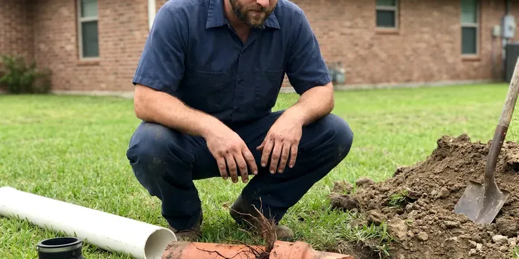

Well Pump Repair in Greenville, MS
Private wells near Greenville, MS can run deep, and pump failures leave a home dry. Our crew diagnoses pumps, tanks and controls quickly and fixes them right.
- Clear Pricing Before Work
- Skilled Pump Technicians
- Submersible and Jet Pumps
- Pressure Tank Specialists

Expert Well Pump Solutions Available in Greenville, MS.
Don't let a faulty well pump disrupt your daily life, contact us for immediate assistance.
Reliable Well Pump Repair in Greenville, MS
DFM Plumbing understands that a well is your only water source, so a failure means no showers, no toilets and no irrigation. We put first no-water calls and carry parts from Franklin Electric, Grundfos, Goulds and Well-X-Trol to restore service quickly.
Our expertise includes:
- Pressure Tank and Switch Settings
- Pressure switch, control box and capacitor testing and replacement
- Submersible and Jet Pump Repair

Additional Plumbing Repair Services in Greenville, MS
We offer expert plumbing repair services across Greenville, MS to fix leaks, restore flow, and keep your system running smoothly.


Customers
Why Choose DFM Plumbing for Well Pump Repair in Greenville, MS?
Choosing DFM Plumbing means you're getting a team that really understands the complexities of well pump systems. We focus on durable repairs that stand up to the demands of household water use.
- Advanced Tools, We use modern diagnostic equipment to precisely pinpoint well pump problems, saving you time and money.
- Genuine Parts, We use only quality, durable replacement parts to ensure the longevity of your well pump repair.
- Local Knowledge, We understand Mississippi water conditions and well system requirements, particularly in Greenville.
Citywide Coverage
DFM Plumbing serves every neighborhood of Greenville, ensuring that no matter where you are, expert well pump repair is just a phone call away. Our local presence means quicker response times and technicians who are already familiar with the area's plumbing infrastructure.
Experienced Team
Each technician at DFM Plumbing is not just a plumber, but a well pump specialist. They undergo ongoing training on various well pump brands and models, including Franklin Electric, Grundfos, and Sta-Rite. Their hands-on experience in the field, especially with Mississippi water systems, translates to efficient and reliable well pump repair services for our Greenville customers.
Safety-First Approach
We protect the safety of your home and our technicians during every well pump repair. All work is performed in accordance with industry best practices and Mississippi plumbing regulations, so you can rest easy that your system is in capable and safe hands.
Trusted Certified Greenville Plumbing Services Professionals
At DFM Plumbing, we take pride in providing certified plumbing services throughout Greenville, MS. Backed by recognized industry credentials, our experienced plumbers combine technical skill with genuine customer care. Whether it is repair, installation, or maintenance, we follow strict safety and quality standards to deliver lasting results you can trust.
Call Us Now PHCC Plumbing Contractor Recognition
PHCC Plumbing Contractor Recognition Better Business Bureau (BBB) Accreditation
Better Business Bureau (BBB) Accreditation Angi Certified Pro
Angi Certified Pro ISO 9001 Quality Management Certification
ISO 9001 Quality Management CertificationTrusted Well Pump Repair Services in Greenville, MS
Well Pump Pressure Tank Issues in Greenville
The pressure tank works in conjunction with your well pump to maintain consistent water pressure and reduce pump cycling. A waterlogged tank, a ruptured diaphragm, or a faulty air valve can cause rapid pump cycling, fluctuating water pressure, or even no water at all. Our team carefully diagnoses pressure tank problems and performs necessary repairs or replacements. We ensure your tank is properly sized and charged for optimal system performance in Greenville.

Submersible Well Pump Repair in Greenville
Submersible pumps are widely used in residential wells, designed to operate submerged within the well casing. When these pumps fail, symptoms usually include no water, low water pressure, or strange noises from the well. Our technicians are skilled at diagnosing issues like motor burnout, damaged impellers, or faulty check valves that can affect submersible pump performance. We use dedicated equipment for safe and efficient pump extraction and reinstallation, protecting the integrity of your well system.
Franklin Electric Well Pump Service in Greenville, MS
Franklin Electric is a leading manufacturer of well pumps and motors, known for their durability. Our technicians are very familiar with Franklin Electric products, from submersible motors to control boxes. We carry common Franklin Electric replacement parts to ensure quick repairs. Whether it's a motor rewind or a complete pump replacement, you can trust our expertise with Franklin Electric systems in Greenville.
Jet Pump Repair in Greenville, MS
Jet pumps, usually installed above ground, are often used for shallower wells or as booster pumps. Typical issues include loss of prime, seal leaks, or motor wear. We troubleshoot problems like air in the lines, clogged foot valves, or faulty pressure switches. Our team in Greenville is skilled at restoring prime and replacing worn components to get your jet pump operating efficiently again, a frequent need where water levels rise and fall.
Well Pump Maintenance & Repair Cost Comparison in Greenville, MS
Investing in regular well pump maintenance can frequently prevent costly emergency repairs. While an average well pump repair in Greenville might range from $400 to $1,500 depending on the complexity and parts needed, preventive checks are typically much less. DFM Plumbing provides clear, upfront pricing for both repair and maintenance services, helping you make informed decisions to protect your well system's longevity and performance.
Well Pump Control Box & Electrical Repair in Greenville, MS
Many well pump failures trace back to electrical issues within the control box or wiring. This can include tripped breakers, faulty capacitors, or corroded connections. Our licensed technicians are trained to safely diagnose and repair these complex electrical components. We ensure all wiring meets Mississippi electrical codes, preventing hazards and ensuring reliable pump operation in Greenville homes.
Control Box and Electrical Repair in Greenville, MS
Three-wire submersible pumps rely on a control box with a start capacitor and relay. Hurricanes, tropical storms and heavy rain bring flooding risk to Mississippi, especially in low-lying and coastal areas. Lightning and power surges frequently damage these components. We test capacitors, relays and overload protection and replace failed parts. A surge protector at the control box can help reduce repeat failures.

Jet Pump System Repair in Greenville, MS
Jet pumps, typically found above ground, use an ejector assembly to draw water from the well. Typical problems include air leaks in the suction line, clogged nozzles, or a failing motor. These issues can lead to intermittent water flow or a pump that runs continuously without building pressure. DFM Plumbing can reliably troubleshoot and repair these components, ensuring your jet pump system in Greenville operates at peak efficiency. We also check for proper priming, which is crucial for jet pump function.
Well Pump Repair Near Me in Greenville, MS
Finding a well pump repair near me can be tough in rural areas, where many plumbers do not work on wells. DFM Plumbing has the equipment and experience to pull, test and set pumps. We bring that capability to homes across the area.
When your well pump breaks down, you need a local expert who can respond quickly. DFM Plumbing is your trusted partner for well pump repair near me in Greenville, MS. Our technicians are familiar with the local geology and water conditions that can affect well systems, allowing for more accurate and efficient service. We are always just a call away.
DFM Plumbing at a Glance
- Fully licensed plumbing team covering Greenville, MS
- Same-day appointments and 24/7 emergency response
- Upfront, flat-rate pricing before work begins
- 4.8-star rated by 503+ Mississippi customers
Greenville Map
Greenville Information
- Population
- 27,644
- Area codes
- Local
- Service area
- Greenville and communities within 40 miles
- Nearby
- Vicksburg, Clinton, Madison, Ridgeland
Keeping your well pump in top condition is essential for homes in Greenville, MS that rely on private well systems, especially with changing water tables and varied soil conditions.
Expert Services
Trust our professionals for reliable DFM Plumbing solutions in Greenville, MS.
Our Specialized Plumbing Services in Greenville, MS
At DFM Plumbing, we provide a complete range of plumbing services across Greenville, MS. From leak detection to full system installations, our team ensures fast, precise, and affordable service for both residential and commercial properties. Explore our core services below:


How Our Well Pump Repair Process Works in Greenville, MS
Our straightforward well pump repair process is designed to get your water flowing again with minimal hassle.
Request a Quote
Contact DFM Plumbing at (601) 265-9260 to describe your well pump issue. We'll gather key information and schedule a convenient service appointment for you.
Diagnosis & Estimate
Our experienced technician will arrive on time to thoroughly inspect your well pump system, identify the problem, and provide a clear, upfront estimate before we start.
Expert Repair
Upon your approval, we'll proceed with the repair using quality parts and proven techniques. We make sure your well pump is restored to optimal working condition efficiently.
Frequently Asked Questions About Well Pump Repair in Greenville
The cost of well pump repair in Greenville can vary a great deal, typically ranging from $300 for minor repairs like a pressure switch replacement to over $2,000 for complex issues such as replacing a submersible pump motor. Factors include the type of pump, the depth of the well, and the specific parts needed. We provide a detailed estimate after diagnosing the problem.
Yes. Our labor is warrantied, and new pumps, motors and tanks carry manufacturer warranties that often run several years. We explain the coverage on your invoice.
Most pump replacements take four to eight hours once parts are on site. Very deep wells or stuck pumps can take more time.
Typical signs include no water, inconsistent water pressure, air sputtering from faucets, strange noises coming from the well or pressure tank, or the pump running constantly. If you notice any of these, it's wise to call for a professional inspection.
Yes, DFM Plumbing stands behind its work. We offer warranties on both parts and labor for our well pump repairs. Specific warranty details will be provided with your estimate, so you can feel confident about the longevity of our service.
Typical signs include no water, low water pressure, intermittent water flow, strange noises coming from the pump or pressure tank, cloudy or rusty water, or your pump running constantly. If you notice any of these symptoms in your Greenville home, it's best to call a professional quickly.
DFM Plumbing services all major well pump brands, including but not limited to Goulds, Grundfos, Franklin Electric, Myers, and Sta-Rite. Our technicians are trained and equipped to work on a broad range of models and system types.
Well pump failures can be caused by various factors such as electrical problems (power surges, faulty wiring), mechanical wear and tear on pump components, sediment buildup in the well, or issues with the pressure tank or switch. Age and consistent use also contribute.
What People Are Saying About Our Plumbing Experts?

Daniel K.
A pipe burst at 11 pm and they actually answered. The plumber showed up within the hour, shut everything down, and had us back to normal the next morning. Could not ask for more.
Emergency Plumbing · Pearl, MS
Robert G.
The trenchless sewer replacement saved our front yard. They walked us through the camera inspection footage first so we knew exactly what we were paying for.
Sewer Line Replacement · Ridgeland, MS
Patricia H.
We had a slab leak that two other companies could not find. DFM Plumbing located it in under an hour, explained our options, and the price matched the quote to the dollar.
Slab Leak Repair · Pearl, MS
Emily R.
I called DFM Plumbing for plumbing repair, and the technician was fast, polite, and thorough. They explained the problem clearly and fixed it the same day. I will definitely hire them again. Highly recommended!
Plumbing Repair · Vicksburg, MS
Laura S.
I scheduled a water heater replacement, and the team made the process smooth and affordable. The new unit works perfectly, and they cleaned up after completing the job.
Water Heater Replacement · Jackson, MS
Mark T.
When our office needed drain cleaning, DFM Plumbing provided quick, reliable service. The plumber arrived on time and made sure every drain flowed perfectly before leaving. Very satisfied.
Drain Cleaning · Pearl, MS